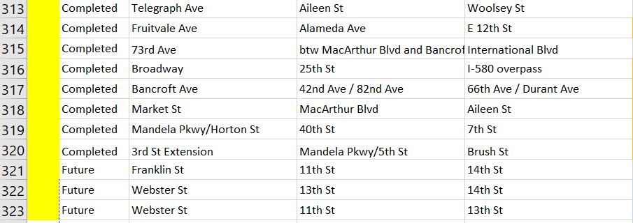
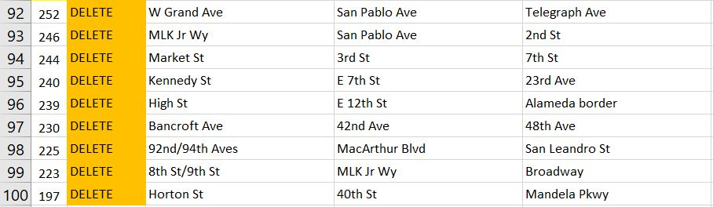

This wiki page walks you through how and when to update our live data sets. These live data sets are generally used to create ArcGIS Online Interactive Maps. Our live data sets include: Counts, Striping As-Builts, and Road Diets.
Adding a New Record
Each data set listed above has a corresponding excel or access database file. When new data is acquired it should be added to the excel sheet under the last existing entry, leaving the ID column empty and highlighting the empty ID field in yellow. Then, fill in the all of the columns with the projects corresponding data. The ID field will be filled and un-highlighted after the spatial edit has been completed. For the as-built maps only, individual .pdf and .dwg documents need to be uploaded to sharepoint and a URL generated.

Deleting a Record
When a record needs to be deleted, it should first be noted in the "Status Column". First the record should be deleted from the Shapefile, then the tabular (Excel) data.

Editing Tabular Data
This task of the update process is the most simple. Edit your desired data on the excel sheet and the next time a join with the spatial data is completed, the edit to the tabular data will have been updated.
Spatial Edits
Every three months (or as large batches of data are obtained), each data set should be updated. First, you must open the corresponding excel file to see if any additions have been made to the data set. Then, open Arcmap and add said data sets shapefile and make sure the previous join is still intact.
Next, spatialize the new data entries using the edit tool. Having the complete streets layer underneath the layer you are editing helps when creating features because it keeps the new features consistent. When finished make sure to save the edits in Arcmap.
Confirming Edits
To confirm that the edits have been completed, fill the empty ID field in the excel file with the ID that were assigned to the newly created feature in ArcMap. Then remove the yellow highlight from the ID field.
Uploading Files to Sharepoint (As-Builts Map only)
- Staff (not intern), get access to "AsBuiltBikewayStripingPlans" folder from Jennifer
- Log in to Office 365 and click OneDrive
- Drag and drop the .pdf and/or .dwg files into the "AsBuiltBikewayStripingPlans" folder
- Rename each file using the syntax from other files (start with Project ID# and separate words with _ or - (don't leave blanks)
- Select the file radio button and then copy the link using Copy Link from menu (there are several ways)
- TBD: where to save URL for .pdf and dwg
Always be sure to
Save Everything
Save and close Arcmap and save and close the excel file.
Greater Detailed Steps (Broken down for each dataset)
Road Diets:
1. Opening the Excel file that is linked to the Spatial Data (Located here: \\PWAFILE2\Transportation\Bike-Ped_Program\Projects\Planning\SC-TAP-bike-network\7-Road-diet-mapping\road-diets-SOURCE.xls).
- Upon opening the Excel file, view the "read me" tab to understand how the sheet works.
- If new segments need to be spatialized, their ID column will have the words "NEW" written in them rather than an ID number. Take note of the extents and proceed to step 2.
2. Open ArcMap Document (Located here: \\PWAFILE2\Transportation\Bike-Ped_Program\Projects\Planning\SC-TAP-bike-network\7-Road-diet-mapping\RoadDietsMap.mxd).
3. Start an editing session with the Road_Diet_Complete_Dataset shapefile.
- Spatialize the features that are listed in the Excel Sheet without an ID number.
- Once you have created the new segment, switch back to the Excel file and add the ID number next to the segment's information.
4. Add the Excel file to ArcMap.
- Make sure you are adding the sheet with the data, rather than the "read me" tab.
5. Join Excel Sheet to Shapefile
6. Export Shapefile to Road Diets folder
-Folder is located here (\\PWAFILE2\Transportation\Bike-Ped_Program\Projects\Planning\SC-TAP-bike-network\7-Road-diet-mapping\Shapefiles)
7. In Shapefile's folder Zip all parts of the shapefile into a folder
-ArcGIS Online only accepts Zipped Shapefiles
8. Add Shapefile to ArcGIS Online Road Diets Map.
- Before deleting old layer, copy symbology and pop-up window configuration.
9. SAVE
Counts
Striping As-Builts